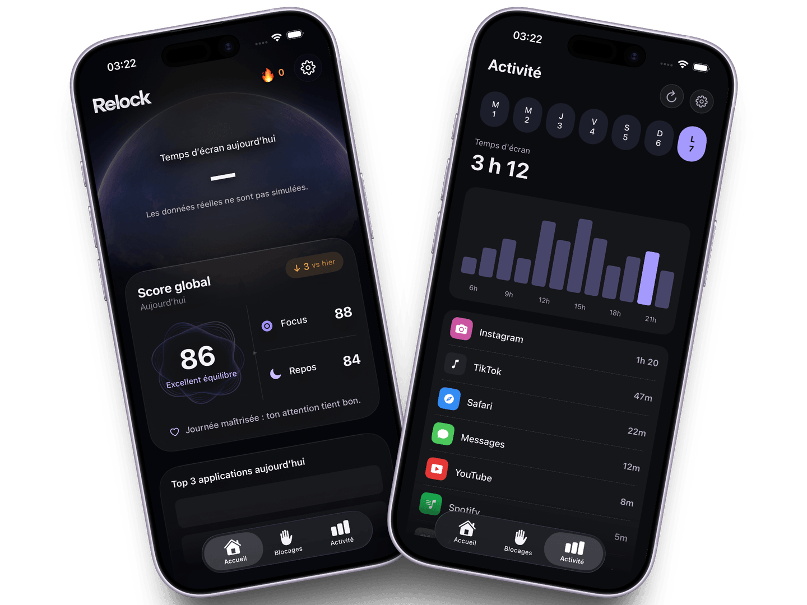
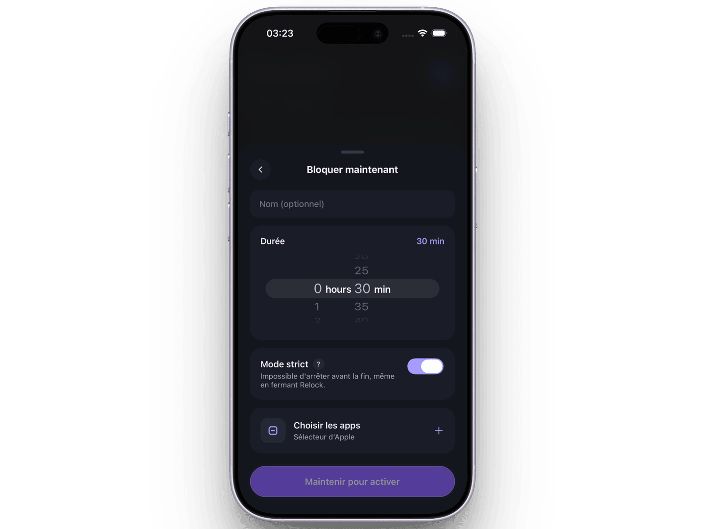
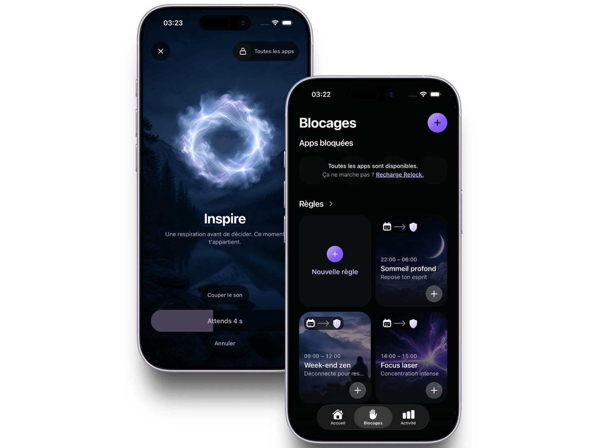

Avant que la journée appartienne à tout le monde.
Gardez le début de la matinée pour vos pensées, vos plans et votre propre rythme.
Bloqueur d’applications iPhone, bâti sur le Temps d’écran d’Apple
Relock est un bloqueur d’applications iPhone qui place une pause intentionnelle entre vous et le défilement. Choisissez les applications distrayantes qui vous éloignent, décidez quand elles sont hors d’atteinte, et réduisez votre temps d’écran sans rien supprimer de ce que vous voulez garder.
Bâti sur le Temps d’écran et Family Controls d’Apple. Bientôt sur l’App Store pour iPhone, sous iOS 16 ou version ultérieure, au Canada et aux États-Unis.

Pensé pour la vraie vie
Cinq minutes deviennent cinquante sans prévenir. Relock intervient là où le réflexe apparaît, sans transformer votre attention en nouvelle performance.
Gardez le début de la matinée pour vos pensées, vos plans et votre propre rythme.
Protégez ce fragile élan d’attention qui transforme l’effort en vrai progrès.
Terminez la journée plus doucement et laissez une place au sommeil avant le prochain défilement.
Ce que contient Relock
Une limite qui peut vraiment vous ressembler. Choisissez ce que vous protégez, décidez quand cela compte et laissez Relock tenir la limite avec vous.

Sélectionnez apps et catégories avec Family Controls. Les jetons sensibles restent dans le groupe d’apps iOS utilisé pour appliquer les règles.
Un délai progressif, une plage horaire comme 22 h – 8 h, ou une limite du nombre d’ouvertures par jour. Comparez les trois types de règles.
Modifiez, suspendez, reprenez ou réinitialisez vos règles au lieu d’imposer le même plan à chaque journée.
Consultez les interventions, le temps estimé récupéré et vos séries comme une information, jamais un jugement.
Pourquoi choisir Relock?
Moins de contrôle, plus d’autonomie. La meilleure limite n’est pas la plus dure : c’est celle qui vous rappelle ce que vous vouliez.
Transformez un réflexe invisible en décision visible avant que l’app prenne les prochaines minutes.
Choisissez vos apps, horaires et niveau de friction plutôt que de suivre une détox universelle.
Une interface ciblée et des retours mesurés restent utiles sans exiger davantage d’attention.
La pause est la fonctionnalité
Donnez au réflexe un endroit où s’arrêter. Quand une app protégée est restreinte, Relock crée une interruption claire. Vous retrouvez la raison derrière la règle et pouvez décider de ce qui mérite réellement votre attention.

L’idée derrière Relock
Le but n’est pas de gagner contre votre téléphone. C’est de remarquer le moment, de lever les yeux et de choisir la vie qui attend de l’autre côté de l’écran.
À lire avant de choisir
Trois pages écrites depuis le produit lui-même : ce qu’Apple autorise à un bloqueur d’applications, ce qu’il faut essayer avant d’en installer un, et comment interrompre un défilement déjà commencé.
Réponses
Sachez ce que vous choisissez.
Un bloqueur d’applications place une barrière entre vous et une app que vous ouvrez sans l’avoir décidé. Dans Relock, vous choisissez des apps ou des catégories entières dans le sélecteur d’Apple, puis vous décidez du comportement du blocage : un délai qui s’allonge à chaque ouverture, une plage horaire comme 22 h – 8 h, ou une limite du nombre d’ouvertures par jour.
Oui. Le blocage est assuré par le framework Family Controls d’Apple, le même système que celui derrière le Temps d’écran. Relock demande l’autorisation Temps d’écran une fois; sans elle, il affiche vos règles mais n’en applique aucune.
Sur iPhone, sous iOS 16 ou version ultérieure. Family Controls n’existe que sur les plateformes Apple, et Relock est conçu pour l’iPhone seul — il n’y a pas de version iPad, Mac, Android ni web.
Relock arrive sur l’App Store au Canada et aux États-Unis. L’app n’est pas encore publiée : pour l’instant, vous pouvez demander un accès anticipé en écrivant à contact@getrelock.com.
Non. Apple remet à Relock des jetons de sélection opaques, jamais des noms d’apps, et le flux de blocage ne lit ni messages, ni photos, ni contenus de pages, ni frappes dans les apps restreintes. Ces jetons restent dans le groupe d’apps iOS utilisé pour appliquer les règles.
Les deux. Une règle à plage horaire rend les apps choisies indisponibles pendant les heures que vous fixez. Une limite quotidienne plafonne le nombre d’ouvertures avant que l’app cesse de s’ouvrir jusqu’au lendemain. Plusieurs règles peuvent tourner en même temps : la plus stricte applicable à cet instant l’emporte.
Oui, une fois par semaine. Le déblocage d’urgence lève tout immédiatement — sans attente, sans mode strict — et il supprime vos règles au lieu de les suspendre. Ce prix est délibéré : c’est ce qui empêche la sortie de secours de devenir une habitude, et ce qui garantit que Relock ne prend jamais votre téléphone en otage.
Votre compte, votre profil, les règles, les réponses d’accueil et des statistiques agrégées peuvent être stockés chez les prestataires Relock. La Politique de confidentialité donne le détail.
Gérez ou annulez-le dans la boutique où vous l’avez acheté. Supprimer Relock ou votre compte n’annule pas automatiquement un abonnement en boutique.
Oui. Les Réglages offrent un export JSON et une suppression de compte que vous déclenchez vous-même, en tout temps. Les données que nos prestataires détiennent pour nous — photo de profil, dossier d’abonnement — sont retirées dans les 30 jours suivants. Écrivez à contact@getrelock.com pour ce que l’export laisse de côté.
Commencez par l’app qui vole cinq minutes. Construisez la pause qui vous les rend.
Demander un accès anticipé